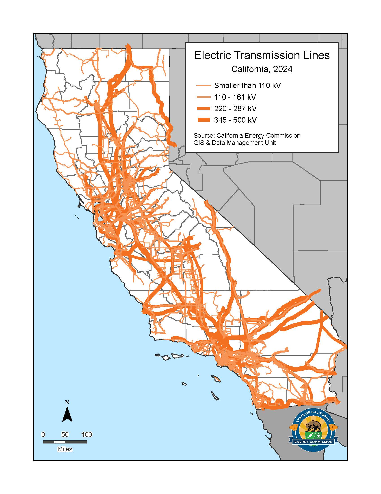

ML-based disaggregation of electricity demand to inform transmission and storage investment decisions

California's grid operators need accurate, granular forecasts of electricity demand to make good infrastructure decisions — where to build new transmission lines, how much battery storage to deploy, and how much to spend on each. This project builds an hourly demand disaggregation model for California, using machine learning trained on public data from the U.S. Energy Information Administration (EIA), CAISO's Open Access Same-time Information System (OASIS), and the California Integrated Energy Policy Report (IEPR), supplemented by confidential load data. The resulting demand forecasts feed directly into a second research project that uses optimization to compare the economic case for new transmission infrastructure versus distributed battery storage.
Planning a power grid is a long-horizon problem: transmission lines take years to permit and build, and decisions made today lock in infrastructure for decades. The quality of those decisions depends almost entirely on how well we can predict where and when demand will grow. California is a particularly challenging and high-stakes case — load patterns are shaped by a rapidly expanding electric vehicle fleet, growing air conditioning use due to rising temperatures, and the large-scale installation of rooftop solar, which suppresses net grid demand during the day while creating steeper evening ramps.
Existing public forecasts from CAISO and the California Energy Commission give statewide or regional totals, but planning decisions require finer resolution: which specific transmission corridors will be congested, and at what hours? This project disaggregates those totals to produce node-level, hour-by-hour demand profiles that can serve as inputs to transmission and storage planning models.
The model is trained on a combination of publicly available datasets:
The machine learning component learns the relationship between observable features — weather, time-of-day, season, day-of-week, electrification penetration — and the spatial and temporal distribution of demand across the grid. The goal is a model that can generate plausible hourly demand profiles at the node level for multiple future scenarios (baseline, high electrification, high solar penetration).
The demand forecasts produced by the ML model are the primary input to a capacity expansion model implemented in Julia with the Gurobi solver. This second model asks a central policy question: given expected demand growth and a budget for new infrastructure, is it cheaper to build new transmission lines or to install distributed battery storage?
Transmission and storage address grid constraints differently. A new line permanently increases how much power can move between two points, but is expensive, slow to build, and fixed in location. Batteries are faster to deploy and more flexible, but their value depends heavily on where they are placed and how often congestion occurs. The optimization model compares the costs and benefits of each approach across many scenarios of demand growth, renewable generation, and infrastructure cost, producing recommendations for where each type of investment is most justified.
This project is currently in progress. The data pipeline and initial ML models are under development. Results and visualizations will be added here as the work advances.